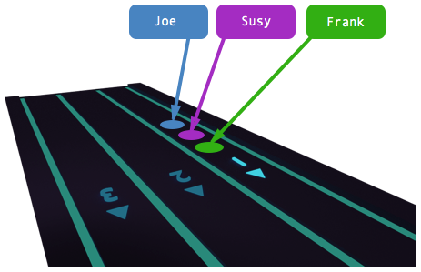
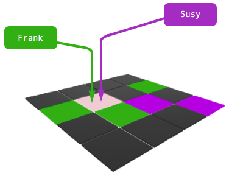

Concurrent C Programming
Seminar Arbeit, 2015
Alex Gustafson i10a
Introduction
The purpose of this seminar project is to become familiar with writing concurrent programs in c.
The challenge is to manage resources that multiple clients can access simultanously in a way that neither blocks the client nor results in race conditions or deadlocks.
Critical Sections
The Game has two main critical sections where race conditions or deadlocks can occur...
Joining the Game
The game waits until a minimum number of players has joined. If the player count mechanism is not atomic, deadlocks can occur.
Taking a Cell
If the mechanism for taking a cell is not atomic, one player may receive confirmation that he/she has taken the cell even though another player took it.
Naive Countdown
int player_countdown = 5;
int join()
{
if (player_countdown > 0)
{
player_countdown--;
block_on_mutex();
}
signal_to_unblock();
return 1;
}
Atomic Countdown
pthread_cond_t join_ready = PTHREAD_COND_INITIALIZER;
pthread_mutex_t join_lock = PTHREAD_MUTEX_INITIALIZER;
int join_game()
{
pthread_mutex_lock(&join_lock);
if (--join_countdown > 0)
pthread_cond_wait(&join_ready, &join_lock);
pthread_mutex_unlock(&join_lock);
pthread_cond_signal(&join_ready);
return 1;
}
Atomic Take
int take_cell(int x, int y, int player_id)
{
int result = request_cell_lock(x, y);
if (result == 0)
{
get_cell(x, y)->player_id = player_id;
release_cell_lock(x, y);
return 1;
}
return result;
}
Cell Lock Function
int request_cell_lock(int x, int y)
{
if (get_cell(x, y) == NULL) {
return -1;
}
return pthread_mutex_trylock(&get_cell(x, y)->cell_lock);
}
Cell Lock Structure
struct cell {
int player_id;
pthread_mutex_t cell_lock;
};
Implementation
- The server application is comprised of 2 components, the TCP Manager and a Field Manager
- The TCP Manager is implemented using threads. A new thread is spawned per client connection. The new client socket is passed to the thread via a pointer. The TCP Manager also starts a "referee" thread that checks periodically if there is a winner.
- The Field Manager manages the playing field and handles access to the cells. The Field Manager does not use threads, but it does use mutexes in the critical sections.
Testing
The Field Manager and TCP Manager are not tightly coupled. The Field Manager communicates with the TCP Manager through the use of registered function pointers. This makes testing the components much easier because the function pointers can be swapped out with "mocked" functions that have a predefined predictable behavior.
Defining Function Pointers
// defined in the field_manager.h file
typedef int (*take_cb)(int, int, int);
void register_take_callbacks(take_cb tcb);
// defined in the field_manager.c file
take_cb take_callback;
void register_take_callbacks(take_cb tcb)
{
take_callback = tcb;
}Registering Function Pointers
// take_cell is in the field_manager.h file
// int take_cell(int x, int y, int player_id);
// the registration takes places in the host application
register_take_callbacks(take_cell);
Mock Functions Example
// must fit typedef int (*take_cb)(int, int, int);
int second = 0;
int every_second_take(int x, int y, int player_id) {
if(second == 1) {
second = 0;
return 1;
}
second = 1;
return 0;
}More Testing
Testing applications were developed in C++ using the JUCE Library. JUCE is a cross platform C++ library that includes many nice classes that help manage complex things like thread pools, smart pointers, key / value data structures, unit testing, and lots of other stuff.
Testing with Automated Players
<< show code >>
<< run tests >>
Conclusion
Building a test environment from the start helped find thousands of trivial bugs that would have otherwise been difficult to track down. That was immensely important and helped me save time and get a better understanding of the fundamentals.
Using JUCE, a C++ Library, allowed me to include and test the c source code directly while using the more advanced C++ features to develop tests quickly.
Documentation takes more time that you think, don't wait until the end. Document while you develop.
Questions?
Danke!
This project, documentation, and presentation are available here
https://github.com/alexgustafson/zhaw_concurren_c